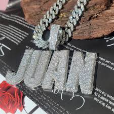
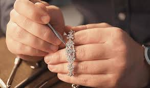
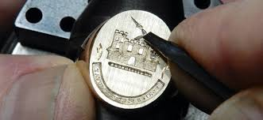
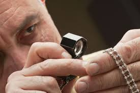
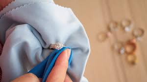

Our Services
At Quiver's Ice, we offer a wide range of services to meet all your jewelry needs. Whether you're looking to design a custom piece, repair a treasured item, or simply find the perfect gift, our expert team is here to assist you.
Custom Jewelry Design
Bring your vision to life with our custom jewelry design services. Our skilled designers will work closely with you to create a one-of-a-kind piece that reflects your personal style and story. From initial sketches to final creation, we're with you every step of the way.
Jewelry Repair & Restoration
Preserve your treasured pieces with our expert repair and restoration services. We specialize in restoring jewelry to its original glory, whether it's repairing a broken chain, resetting a loose stone, or polishing a vintage piece.
Engraving Services
Add a personal touch to your jewelry with our engraving services. Perfect for commemorating special occasions, our engraving can be added to rings, necklaces, bracelets, and more.
Appraisal Services
Ensure your jewelry is accurately valued with our professional appraisal services. Whether for insurance purposes or personal knowledge, our certified appraisers provide detailed and reliable valuations.
Jewelry Cleaning & Maintenance
Keep your jewelry looking its best with our cleaning and maintenance services. Regular upkeep ensures that your pieces remain sparkling and free from damage over time.
